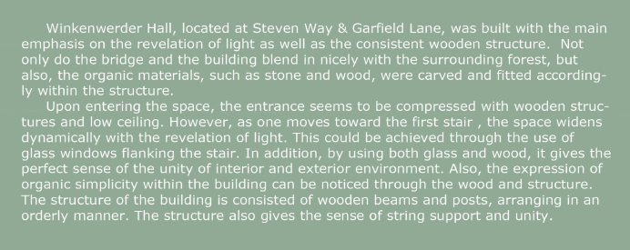

WINKENWERDER


The poster presentation of the Winkenwerder Forest Lab was created during the ARCH210 class at the University of Washington. It was all hand drawn and sketches of the building without using any rulers. The drawings were then scanned and put together in the Photoshop and Illustrator. The poster includes perspective drawing, structural presentation, site view and cross sectional view of the building.